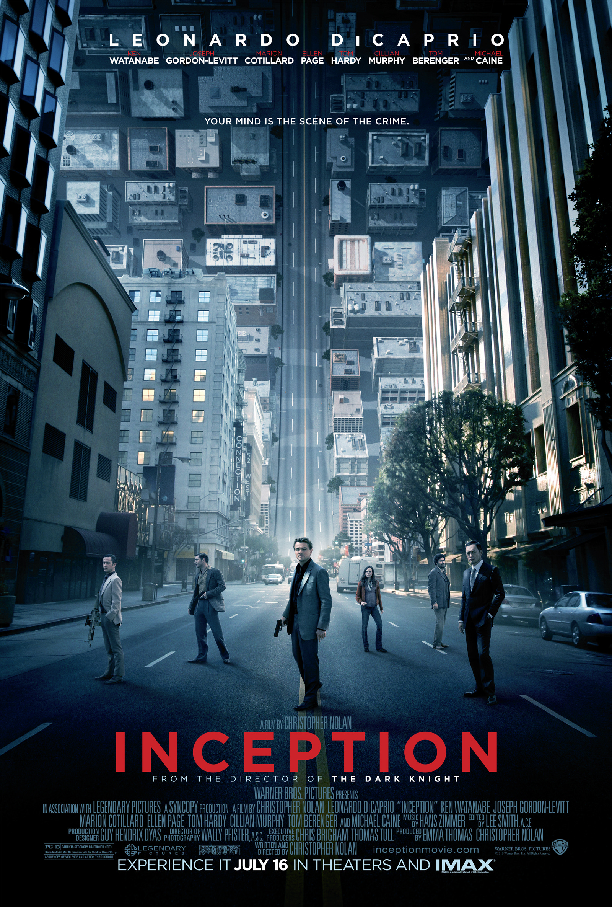

Начало Inception

«Усталый, старый воин, одиноко ждущий смерть»
Философия Нолана. Она проста и в то же время до ужаса исключительна. Заставить свое окружение думать также как и ты. Разделять все происходящие события совместно. Испытывать одни и те же сложности. Стремиться держась
вместе за руки достичь невозможного. Заставить необычные вещи происходить обычным путем. Тему можно продолжать, а ее краткое описание останется неизменным. Любой человек, с которым ты работаешь, будь то актер или еще кто, всегда
будет всецело проникаться тем материалом, что ты собственноручно написал, если этот материал будет каждым человеком воспринят на самом глубоком личностном уровне. Фанаты сериала «LOST» могли бы с «Началом» проделать
то же самое, что они проделывали с каждой серией популярного, теперь уже в былые времена, сериала. Наверное, неспроста в конечном итоге нарисуется процент людей, что от дикого восторга после просмотра будут явно терять сознание
в самом позитивном смысле? Название кинокомпании Нолана «Syncopy» еще с древнегреческой эпохи означает медицинский термин обморока, потери сознания. Не говорю уже о сюжетных сходствах с термином. А логотип его
кинокомпании, чье основание случилось в 99 году, имеет абсолютно идентичное оформление, что и заставка «Начала». В картине герои
Пейдж и ДиКаприо знакомятся там же, где Нолан в свое время познакомился со своей будущей супругой и постоянным рабочим партнером. От небоскребов Токио до снежных вершин Калгари, от экзотики Марокканского Танжера до живописных улиц Парижа,
от исторического Лондона до современного Лос-Анджелеса. Тот масштаб, который Нолан видел у эмоционального путешествия своей картины, не мог уместиться в скромные рамки, поэтому съемочный процесс затронул 4 континента
и 6 столь разных стран. Чтобы сны выглядели как можно более реальными, режиссер в очередной раз последовал своему вечному принципу и постарался по максимуму отказаться от компьютерной графики. Будь то вращающийся коридор длиною
в 30 метров построенный в Кардингтоне, или разносящаяся на самые мелкие куски улица Парижа, массовые взрывы на которой вызваны ничем иным как азотом под высоким давлением. Внушительные постройки в Канадском Калгари обеспечивали работой тысячи местных жителей на протяжении шести месяцев. Их усилия могли не оправдать себя в полной мере из-за того, что по приближению съемочной группы на место непосредственных съемок, долгое время не было столь
необходимого снега. Он «выпал», создав для создателей уже другую проблему в связи с тем, что не прекращался очень длительный период. Прибыв в начале августа в Марокко, большой неожиданной удачей для создателей стало знакомство
с местной командой, с чьей помощью Голливуд частично снял уже не один блокбастер на территории этой Африканской страны. А уличный транспорт Лос-Анджелеса напролом убирался железнодорожным составом, за рулем которого всеми любимый
Джим Вайлки. Тот самый парень, что управлял восемнадцати колесной фурой в «Темном рыцаре». Это лишь малая часть из того, чем потрясает «Начало».
ДиКаприо изумляет нас одним из самых сложных персонажей последнего времени, что во многом благодаря той внимательности и личностной приязни, которые Лео проявил к Коббу. Вместе с Марион Котийяр они создают экранную пару способную обволочь душу любого зрителя. Я никогда ничего подобного не видел и близко. Талантливейшая голливудская молодежь в лицах Пейдж и Гордона-Левитта демонстрируют полное понимание
цветовой гаммы и уровней яркости персонажей им отведенных.
Том Харди, исполняя имитатора, привнес в картину существенную долю обаяния. А Киллиан Мерфи наконец воплотил образ который издавна был ему очень любопытен. В мае 2009 года Нолан предложил ему абсолютно любую роль, и он выбрал «Клиента». А Кен Ватанабе как и в случае с остальными образами, все мы еще долго будем пытаться разобрать этого персонажа, являющегося для нас очень важным и харизматичным
вопросом. Каждого из своих актеров Нолан просил не рассказывать что-либо о сюжете даже своим семьям. Вполне символичным является факт наличия в фильме песни Эдит Пиаф. Ведь за образ Эдит Пиаф в картине «Жизнь в розовом цвете» в 2007 году Марион Котийяр получила статуэтку Оскар за лучшую женскую роль. Ханс Циммер уделил самое пристальное внимание созданию дорожки не столько к ошеломляющей визуальной
составляющей картины, а эмоциональному миру главных героев. Всегда видно, когда Ханс захвачен сюжетной основой той картины, за которую берется работать, и «Начало» не стало исключением. Наполняя
происходящую на экране богатую чувственную подоплеку замечательным музыкальным рядом, Ханс не оставил позади собственное воображение, позволив себе выйти за обычные рамки в надежде посмотреть куда они его приведут. Отсюда появилась
гитара, играл на которой никто иной, как Джонни Марр из группы «The Smiths». Для любого из нас существует разница в выборе, во время принятия решения стоит ли гнаться нам за счастливым мгновением или всецелым счастьем
как таковым? Также и здесь. Несмотря на ту скорость, с которой развивается на экране абсолютно разнохарактерный экшен - вы стремитесь за ним поспеть. Наши чувства пробуждаются самыми активными способами из-за того ресурса, что
вызывает в нас подобный инстинкт к постижению и дальнейшему осознанию. Эта лента - символ абсолютно всей структуры нашего с вами повседневного восприятия того, что нас окружает в материальном и нематериальном мире. Символ, который
сам является архитектором моста соединяющего две противоположные стороны. Неимоверный и колоссальный, сложно-процессуальный результат самой выдающейся художественной постановки во всех сферах кинопроизводства. Кино, которое никогда
не покинет ваш разум, требуя от вас его регулярного пересмотра. Кино, которое с каждым очередным смотром вы будете открывать для себя по-новому. Бешеная, многоуровневая, внушительная сюжетная постановка, прикрепленная к глубочайшим
актерским образам. Безгранично богатый смысловой контекст и визуальная составляющая. Все это - совокупность величайшего кинематографического опыта, что Нолан протащил спустя все эти годы. Он никогда бы не стал режиссером №1 в современном
мире не будь он верным, любящим свою семью человеком. И это – самое важное. То - с чего все «Начинается»... Редчайший сон, который выжил спустя столь долгие годы...